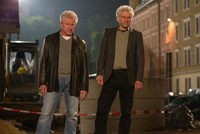

Die Münchner Hauptkommissare Ivo Batic und Franz Leitmayr - Bild: BR/Frederic Batier
Dreharbeiten zum BR-TATORT
Der Wüstensohn
Tausend und eine Nacht mitten in München - In der letzten Woche haben unter der Regie von Rainer Kaufmann die Dreharbeiten zum TATORT "Der Wüstensohn" begonnen. Udo Wachtveitl und Miroslav Nemec geraten als Batic und Leitmayr mit dem Sohn des Emir von Kumar in Konflikt.
Die Münchner Hauptkommissare Ivo Batic und Franz Leitmayr - Bild: BR/Frederic Batier Ein Sportwagen rast durch München, überfährt alle roten Ampeln und durchbricht eine Polizeisperre. Am Steuer sitzt Nasir Al Yasaf, der 5. Sohn des Emir von Kumar. Auf dem Beifahrersitz liegt die Leiche seines Freundes Karim. Als Wirtschaftsattaché genießt Nasir vollen diplomatischen Schutz. Daher sind Batic und Leitmayr für ihre Ermittlungen zunächst die Hände gebunden. Sie dürfen nichts. Nicht einmal Nasir als Hauptverdächtigen befragen, wenn der nicht will. Geschweige denn den Wagen polizeilich untersuchen. Als Diplomatenfahrzeug ist der Fundort der Leiche exterritoriales Gebiet. Batic und Leitmayr stoßen in diesem Fall an die Grenzen ihrer polizeilichen Möglichkeiten. Rainer Kaufmann inszeniert seinen ersten TATORT nach einem Drehbuch von Alex Buresch und Matthias Pacht. Gedreht wird in München und Umgebung bis zum 11. April 2014. Die Ausstrahlung von Der Wüstensohn ist für den Dezember 2014 geplant. Dann ist neben Miroslav Nemec und Udo Wachtveitl auch Ferdinand Hofer zu sehen, der zum zweiten Mal in die Rolle des Assistenten Kalli Hammermann schlüpft. Ob auf dieser Position damit Ruhe einkehrt, bleibt abzuwarten. Weiter spielen Yasin el Harrouk, Janbaz Masoud, Samir Fuchs und Wilson Gonzales Ochsenknecht. BR Pressemeldung
Die Münchner Hauptkommissare Ivo Batic und Franz Leitmayr - Bild: BR/Frederic Batier Ein Sportwagen rast durch München, überfährt alle roten Ampeln und durchbricht eine Polizeisperre. Am Steuer sitzt Nasir Al Yasaf, der 5. Sohn des Emir von Kumar. Auf dem Beifahrersitz liegt die Leiche seines Freundes Karim. Als Wirtschaftsattaché genießt Nasir vollen diplomatischen Schutz. Daher sind Batic und Leitmayr für ihre Ermittlungen zunächst die Hände gebunden. Sie dürfen nichts. Nicht einmal Nasir als Hauptverdächtigen befragen, wenn der nicht will. Geschweige denn den Wagen polizeilich untersuchen. Als Diplomatenfahrzeug ist der Fundort der Leiche exterritoriales Gebiet. Batic und Leitmayr stoßen in diesem Fall an die Grenzen ihrer polizeilichen Möglichkeiten. Rainer Kaufmann inszeniert seinen ersten TATORT nach einem Drehbuch von Alex Buresch und Matthias Pacht. Gedreht wird in München und Umgebung bis zum 11. April 2014. Die Ausstrahlung von Der Wüstensohn ist für den Dezember 2014 geplant. Dann ist neben Miroslav Nemec und Udo Wachtveitl auch Ferdinand Hofer zu sehen, der zum zweiten Mal in die Rolle des Assistenten Kalli Hammermann schlüpft. Ob auf dieser Position damit Ruhe einkehrt, bleibt abzuwarten. Weiter spielen Yasin el Harrouk, Janbaz Masoud, Samir Fuchs und Wilson Gonzales Ochsenknecht. BR Pressemeldung